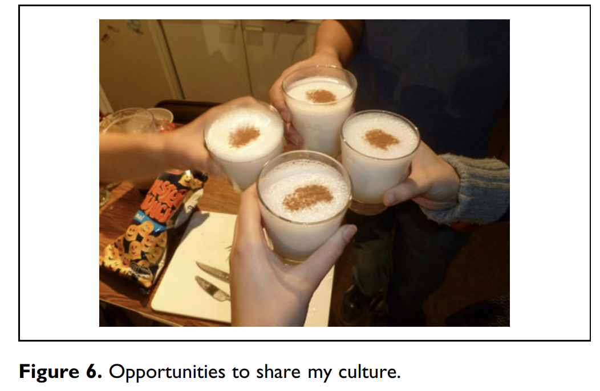
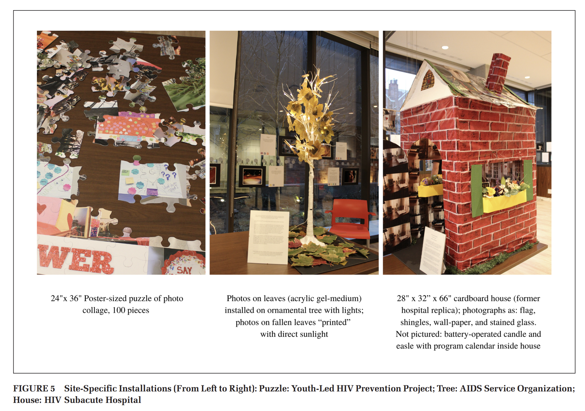
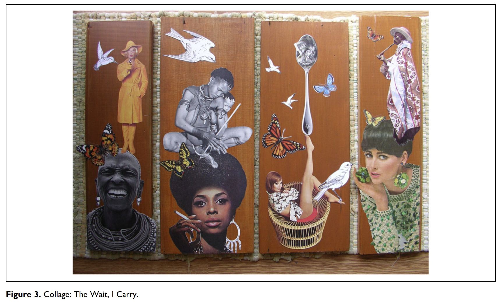
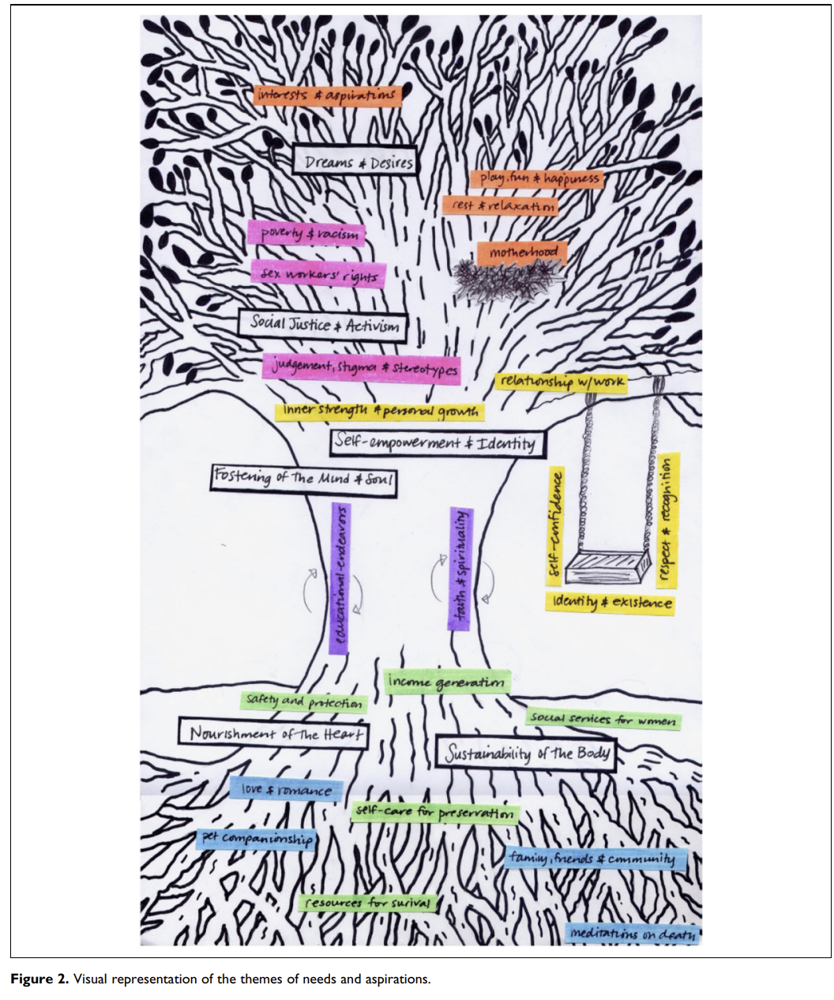

Photovoice
Photovoice is an important participatory visual research method that was developed to promote empowerment and give voice to populations experiencing a variety of health and health care contexts.
What is Photovoice?
Photovoice is a research method built on participant-led photography and dialogue. People use cameras to document the issues, strengths, and concerns in their own lives and communities, then talk about their photos together. The photos and the stories behind them become evidence that can be shared with neighbors, organizations, and decision makers.
Where it comes from
Caroline Wang and Mary Ann Burris introduced the method in the 1990s in a project with rural women in Yunnan Province, China. The women photographed their daily lives and discussed the photos, then shared them with policy makers to advocate for change.
It draws on three roots: feminist theory, documentary photography, and Paulo Freire's idea of education for critical consciousness.
Who uses it
Photovoice began in public health and has since been used with youth, people experiencing homelessness, immigrants and newcomer children, people with disabilities, Indigenous communities, and people living with serious illness. More recently it has also been used in sustainability research.
It is especially well suited to groups whose voices are often left out of research and decision making.

Three Goals of Photovoice
Wang and Burris described three main aims that guide the method.
Record and reflect
Help people document their community's strengths and concerns in their own way.
Promote critical dialogue
Use small and large group discussions of the photos to build shared understanding of important issues.
Reach decision makers
Share the photos and stories with policy makers and others who can act, through exhibits, reports, and presentations.
How Photovoice Works
The original approach follows a fairly set path, but it has been adapted widely. Most projects include some version of these steps.
The usual steps
- 1. Plan the project. Decide the topic, timeline, and guiding questions, ideally with participants.
- 2. Recruit and get consent. Invite participants and gain informed consent for their photos and quotes. People who appear in photos also need to consent.
- 3. Train. Cover the project goals, basic camera skills, and the ethics of photographing other people.
- 4. Take photos. Participants photograph what best represents their experiences, needs, and hopes.
- 5. Discuss. Participants choose photos, give them titles or captions, and talk about their meaning.
- 6. Analyze together. Group the photos into themes.
- 7. Share. Hold an exhibit or present to community members and policy makers.
Questions to guide discussion: SHOWeD
Photovoice discussions often use five questions, known as SHOWeD:
- S What do you See here?
- H What is really Happening here?
- O How does this relate to Our lives?
- e Why does this problem or strength Exist?
- D What can we Do about it?
Some projects add a sixth question: what is missing from this photo?
What a Photo Can Say
Photos can carry things that are hard to put into words. In a study of young women living with serious illness, participants used photos to show the daily reality of their health, and many said no other way of telling would have worked as well.
Photos open up conversation
Images give participants something concrete to talk about, bring back memories, and let them act as experts on their own lives. They can also reach feelings and experiences that interviews alone might miss.
What is not photographed matters too
Some ideas are hard to capture on camera, and some photos feel too painful or risky to take. Talking about "photos not taken" can reveal what matters most to participants.
Making Sense of the Photos Together
Analysis is where photovoice can fall short of its participatory promise. Researchers have developed several ways to analyze photos and stories more fully, and to include participants in the process.
Visualizing DEPICT
A team adapted a collaborative analysis model for a multi-site photovoice project about engagement in the HIV sector. Participants and community partners helped read the photos, build the coding categories, and code the images, then turned their themes into a community report, icons, and exhibits.
Switzer & Flicker, 2021
Question matrices
A set of guiding questions asks researchers to look at where a photo is made, what it shows, and how it is received, and to consider technical, compositional, and social choices at every stage.
Wang & Hannes, 2020
Arts-informed analysis
Collage, drawing, and paper-based sorting can help researchers and participants see themes in a new way, without software, and keep the full story of each person in view.
Gerstenblatt, 2013; Capous-Desyllas & Bromfield, 2018



Adapting Photovoice
Photovoice is flexible. Good projects fit the method to the people and context rather than the other way around.
Māori-voice
Researchers in Aotearoa/New Zealand reshaped photovoice around Māori values like storytelling and collectivity. They began with an interview, gave participants minimal camera training, and asked each person to tell the story of their own photos. They named the approach Māori-voice.
Mark & Boulton, 2017
Working with newcomer children
A review of 21 studies found that visual methods help children share complex feelings and push back against deficit stories about newcomers. It also found that trusting relationships, a choice of activities, and attention to power are essential.
Brown et al., 2020
Strengths and Challenges
Strengths
- Shifts power toward participants as experts on their own lives
- Works across language and literacy differences
- Builds a collective voice that can lead to community action
- Flexible and adaptable to many topics and communities
- Produces exhibits and materials that communities can use
Challenges
- Takes significant time from participants and researchers
- Photos can reveal identities, so privacy and consent need care
- People with limited sight or mobility may be excluded
- Some topics are hard to photograph, and reflecting can bring up painful memories
- Projects often raise awareness without producing policy change
Whose Voice Is It?
To keep the method true to its purpose, involve participants in as many stages as possible: planning, choosing photos, writing titles and captions, finding themes, and deciding how the work is shared. Be clear about who holds ownership of the photos, and plan ahead for privacy, safety, and emotional support (Evans-Agnew & Rosemberg, 2016).
how will this benefit youth?
Photovoice benefits youth by giving them a way to express experiences and feelings that are hard to put into words, including through photos that work across language and literacy differences. It positions young people as experts on their own lives rather than subjects of research, which the research shows can build pride, confidence, and self-awareness, and it lets them challenge negative stories told about their communities. Taking photos, choosing what matters, writing captions, and discussing themes with peers also builds reflection and communication skills and a sense of belonging. Finally, exhibits and presentations connect youth to decision makers who can act on what they share. These benefits depend on real power-sharing, trusting relationships, and emotional support, since youth need genuine say in how their work is analyzed and shared.
Sources
- Brown, A., Spencer, R., McIsaac, J.-L., & Howard, V. (2020). Drawing out their stories: A scoping review of participatory visual research methods with newcomer children. International Journal of Qualitative Methods, 19.
- Burles, M., & Thomas, R. (2014). "I just don't think there's any other image that tells the story like [this] picture does": Researcher and participant reflections on the use of participant-employed photography in social research. International Journal of Qualitative Methods, 13, 185–205.
- Capous-Desyllas, M., & Bromfield, N. F. (2018). Using an arts-informed eclectic approach to photovoice data analysis. International Journal of Qualitative Methods, 17.
- Evans-Agnew, R. A., & Rosemberg, M.-A. S. (2016). Questioning photovoice research: Whose voice? Qualitative Health Research, 26(8), 1019–1030.
- Gerstenblatt, P. (2013). Collage portraits as a method of analysis in qualitative research. International Journal of Qualitative Methods, 12, 294–306.
- Huber, J. M., Bieling, C., García-Martín, M., Plieninger, T., & Torralba, M. (2023). Photovoice: Participatory research methods for sustainability, toolkit #8. GAIA, 32(4), 386–388.
- Mark, G., & Boulton, A. (2017). Indigenising photovoice: Putting Māori cultural values into a research method. Forum Qualitative Sozialforschung, 18(3), Art. 19.
- Switzer, S., & Flicker, S. (2021). Visualizing DEPICT: A multistep model for participatory analysis in photovoice research for social change. Health Promotion Practice, 22(Suppl. 2), 50S–65S.
- Wang, Q., & Hannes, K. (2020). Toward a more comprehensive type of analysis in photovoice research: The development and illustration of supportive question matrices for research teams. International Journal of Qualitative Methods, 19.
- Wang, C., & Burris, M. A. (1997). Photovoice: Concept, methodology, and use for participatory needs assessment. Health Education & Behavior, 24(3), 369–387.